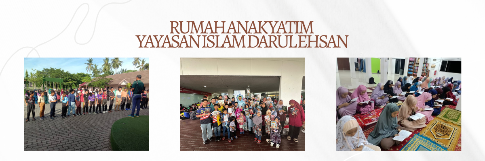
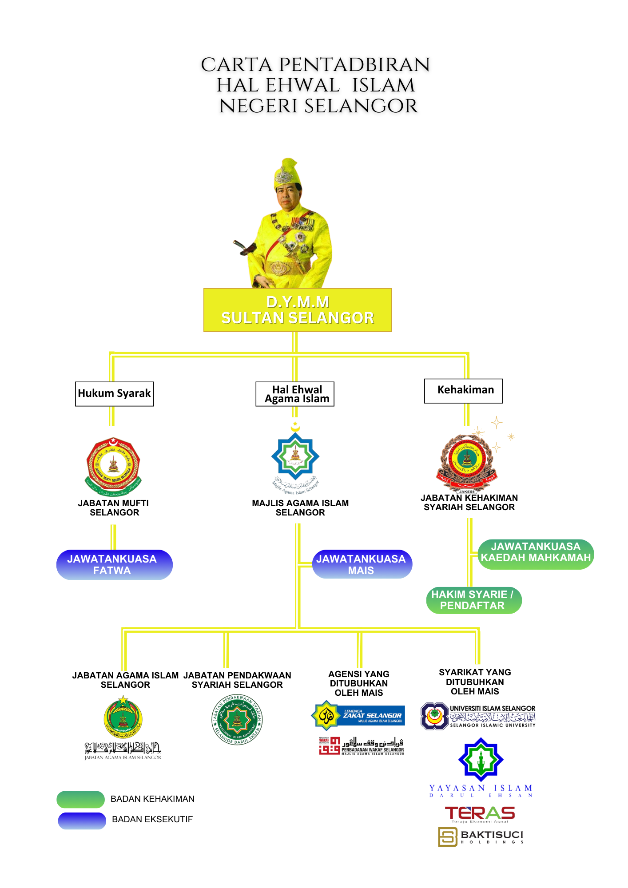

ABOUT YAYASAN ISLAM DARUL EHSAN
Background
Yayasan Islam Darul Ehsan was established under the Selangor Islamic Religious Council (MAIS) as early as 2011, when His Majesty the Sultan of Selangor visited the victims of the landslide involving the Al-Taqwa Orphanage, Hulu Langat. Based on this concern, MAIS took the initiative to establish the Darul Ehsan Islamic Foundation entity for the purpose of expressing concern for orphans in the state of Selangor. Based on the Selangor Islamic Religious Council (MAIS) Meeting No. 3/2011 on 12 June 2011, a proposal was approved to establish this Foundation, known as Yayasan Islam Darul Ehsan, after receiving the approval of His Majesty the Sultan of Selangor. MAIS has also decided that all matters and tasks related to the Foundation will be administered by the MAIS Corporation Group (KMC), a wholly-owned subsidiary of MAIS to manage the affairs of the Foundation. The Foundation's registration was approved under the Companies Commission of Malaysia (SSM) on 20 July 2012 and began operations on 25 September 2012. Strengthening efforts are being made to ensure that the Foundation is on the right track in its implementation to maintain the priorities in the Maqasid Syar'iyah, namely the guardian of Addin (religion), the guardian of An-Nafs (life), the guardian of An-Nasl (lineage), the guardian of Al-Aql (intellect) and the guardian of Al-Mal (property). To begin with, the management is focusing on strengthening and stabilizing the administration so that strategic plans can be formulated systematically. This includes creating corporate ties among stakeholders, formulating ongoing activities that have an impact such as educational assistance and emergency assistance to the community in the event of disasters and natural disasters according to the established guidelines. In 2013, Yayasan Islam Darul Ehsan began to take steps by taking over and managing six (6) MAIS Dialysis Centers which were previously under the management of MAIS Dialysis Sdn Bhd. The basis for the establishment of the MAIS Dialysis Center was to provide quality dialysis treatment services to kidney patients. In 2014, the Selangor Islamic Religious Council (MAIS) gave YIDE the mandate to implement the Hari Raya Aidilfitri Donation Distribution Program to orphans in the state of Selangor during the Ihya’ Ramadhan Ceremony with DYMM Sultan of Selangor as an annual YIDE activity and to manage all matters related to orphans in the state of Selangor which were previously under the management of the Baitulmal Assets Division, MAIS. The strength of Yayasan Islam Darul Ehsan (YIDE) is largely the result of the activities and donations of funds from the community who are concerned about the needs of the surrounding environment. Each donation will be given income tax relief under Section 44(6) of the Income Tax Act 1967. Yayasan Islam Darul Ehsan (YIDE) hopes to be able to carry out welfare for the community in the state of Selangor.
Objectives of Establishing YIDE
1. To receive and manage funds and other forms of non-financial assistance to alleviate human suffering, disaster relief, orphans and improve the standard of living of the community due to poverty, disasters, natural factors, and other causes. 2. To receive, provide, and utilize funds to sponsor education and skills projects and to foster, develop, and improve the level of education and skills in various fields in order to improve the standard of education and skills in this country, and to assist those in need, orphans, the underprivileged or the poor, so that they can take advantage of opportunities to improve their standard of living through education and/or skills. 3. To organize, conduct and support schemes to improve and improve healthcare services especially in providing dialysis treatment centres, other related medical services and products, and to offer and provide alternative treatments such as cupping and to provide training and consultancy services related to alternative treatments and products.
Corporate Structure
{kind=link}
Vision & Mission
- Vision: To be a Foundation that is trusted in supporting target groups.
- Mission: To carry out the trust efficiently and with integrity.
- Motto: Concerned about the Welfare of the Ummah.
{kind=link}
{kind=link}
{kind=link}
{kind=link}
{kind=link}